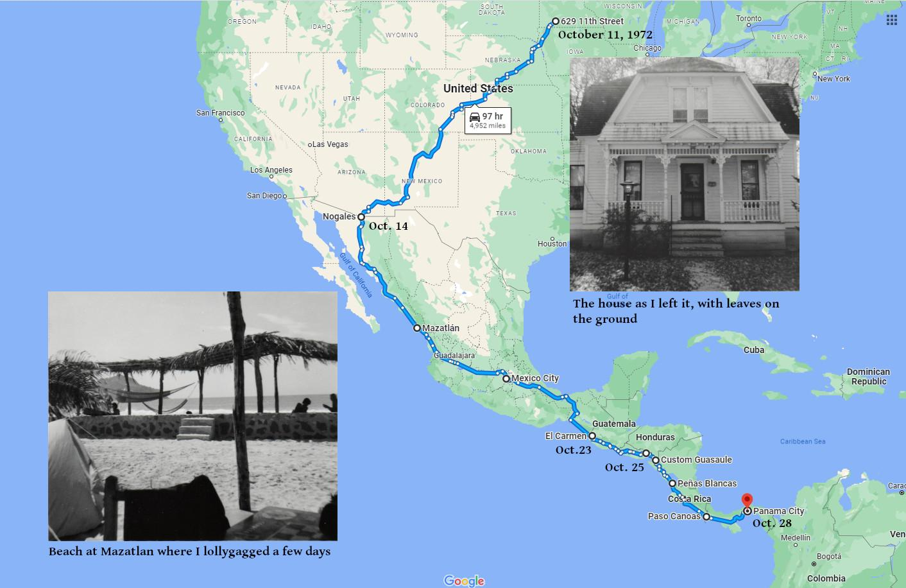
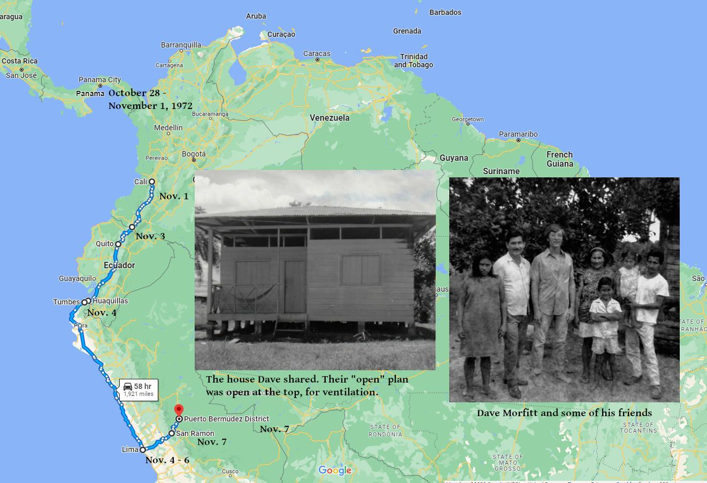

I started the Peru trip in October, so I wore warmer clothing than in the above photo. It does show the equipment I took and my general appearance back then.
I left Windom with my first-ever passport, a Berlitz Latin American guidebook, my backpack, tent, sleeping bag, and $440, most of it in travelers cheques. (I didn't have a credit card then, because I didn't have any credit.) That's about $3,200 in 2023 money. It turned out to be a good investment.
The travel hours and miles on my maps are from Google Maps. The actual routes and travel times back then varied some from those shown on the maps.
Most of the dates on the maps are from my letters or my passport. Other dates (like my departure from Windom and arrival at Nogales) are estimates.
Other than the important items I carried, I was woefully unprepared.
When I got on my way, I read my little guidebook more closely, and discovered that I needed a tourist card or visa for each country I would visit.
For some reason, Mexicans don’t seem to understand the Spanish that I know ... getting along is quite a struggle.
Despite my lack of preparation, I did manage to make progress. I hitchhiked the 1,660 miles from Windom to Nogales with no significant problems. I expected to continue hitchhiking in Mexico and beyond but found out people didn't pick up hitchhikers in Mexico. At least not me, not then.
Fortunately, buses and trains in Mexico and beyond were pretty inexpensive and easy to find. All my travel within Mexico was by railroad. Almost all the rest was by bus.
People were often willing to help me (in ways other than giving me a ride). For example, on a train in Mexico, a little girl thought I looked hungry. She asked her mother to give me a piece of the cheese they had, and her mother did. It was a dry, white, crumbly cheese unlike any I had ever eaten before. I ate it gratefully. The girl was right. I was hungry.
From here on to Panama, it’ll be buses, then a banana boat or something [because their was (and is) no road from Panama to Colombia] – I’ll find out what’s available when I get down there.
Today’s trip was only about 170 miles, but it took 6 hours, because the bus stopped at every Middlesex village and farm, it seemed, along the way.
You may notice that, despite slower means of transport, I proceeded more quickly after Mexico, where I spent 9 days (three of them in Mexico City at various consulates, getting tourist visas for some of the next countries on my route). After that, it was just a day or two in most of the countries. I was only in Honduras part of a day (88 miles across the skinny southern tip). My time in Honduras came later.
I spent 3 days in Panama City, but evidently couldn't find a banana boat. Instead, I took a plane to Cali, Colombia, then buses down the coast.
At most border crossings, some items were cheaper on one side than on the other, which presented an opportunity for enterprising individuals to bring them across the border, preferably without paying import duty. I remembered that T-shirts (I think it was) were cheaper in Ecuador than in Peru. When we got into Peru, there were several checkpoints where customs officers got on the bus and checked the luggage for contraband. The owner of the luggage had to either show that the tax had been paid, make other arrangements with the officer, or forfeit the merchandise. After each stop, there were fewer T-shirts (or less money) on the bus.
I was beginning to get worried about my finances.
Without even getting to Dave’s village (Round trip will probably be at least $20, very probably more) I’ve spent $240, and I have about $200 left. That is not to say I won’t be able to make it back (don’t worry about your child lost somewhere in the Colombian jungle, brought up as a llama-herder.)
Dad must surely remember the time on Lake Nipigon [in Canada] when we only had 4 gallons to get back from a place that took us 6 gallons to get to. But, somehow, we made it.
Google Maps now shows road access between San Ramon and Puerto Bermudez, where Dave was living. There was none then, so I took a 30-minute, 60-mile ride in an "air taxi."
The air taxi is a single-engine, 4-seat, Cessna-type craft. They fly at irregular schedules – whenever they have a load and the weather is suitable. I don’t say clear, because some of the pilots seem to use a primitive, seat-of-the-pants dead-reckoning, and manage to fly in almost any weather.
They gut the planes (take out all but the pilot’s seat and controls) for more cargo space, and stuff in as many people as they can on top of the cargo. I saw one take off with 8 passengers, plus a mess of cargo.
I pulled into Bermúdez on Tues., Nov. 7. Dave was gone at the time to a party for another Volunteer in Huancayo. [Due to the means of communication back then, and my uncertain travels, neither Dave nor I knew when I was going to arrive.]
There were conflicting opinions as to when he was returning, ranging from that afternoon or the next day, to a week later. Well, I settled down in his house (he lives in a house provided by the Ministry of Agriculture, along with several other employees of the Ministry), gathered up some of his books, and waited for his plane to arrive.
He pulled in 3 ½ books later, on Friday, Nov. 10. He knew from letters from home and my letter to him that I was planning to come, so it was no big surprise – but it took us both a while to get used to the reality of the situation.
It was great to be with him after the long trip, and I was so glad I made it.